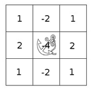

Making your own linear filters!
Goal
In this tutorial you will learn how to:
- Use the OpenCV function cv::filter2D to create your own linear filters.
Theory
The explanation below belongs to the book Learning OpenCV by Bradski and Kaehler.
Convolution
In a very general sense, convolution is an operation between every part of an image and an operator (kernel).
What is a kernel?
A kernel is essentially a fixed size array of numerical coefficients along with an anchor point in that array, which is typically located at the center.
How does convolution with a kernel work?
Assume you want to know the resulting value of a particular location in the image. The value of the convolution is calculated in the following way:
- Place the kernel anchor on top of a determined pixel, with the rest of the kernel overlaying the corresponding local pixels in the image.
- Multiply the kernel coefficients by the corresponding image pixel values and sum the result.
- Place the result to the location of the anchor in the input image.
- Repeat the process for all pixels by scanning the kernel over the entire image.
Expressing the procedure above in the form of an equation we would have:
Fortunately, OpenCV provides you with the function cv::filter2D so you do not have to code all these operations.
Code
What does this program do?
- Loads an image
- Performs a normalized box filter. For instance, for a kernel of size \(size = 3\), the kernel would be:
\[\begin{split}K = \dfrac{1}{3 \cdot 3} \begin{bmatrix} 1 & 1 & 1 \\ 1 & 1 & 1 \\ 1 & 1 & 1 \end{bmatrix}\end{split}\]The program will perform the filter operation with kernels of sizes 3, 5, 7, 9 and 11.
- The filter output (with each kernel) will be shown during 500 milliseconds
The tutorial code’s is shown lines below. You can also download it from here
#include "opencv2/imgproc.hpp" #include "opencv2/imgcodecs.hpp" #include "opencv2/highgui.hpp" using namespace cv; int main ( int, char** argv ) { Mat src, dst; Mat kernel; Point anchor; double delta; int ddepth; int kernel_size; const char* window_name = "filter2D Demo"; src = imread( argv[1], IMREAD_COLOR ); // Load an image if( src.empty() ) { return -1; } anchor = Point( -1, -1 ); delta = 0; ddepth = -1; int ind = 0; for(;;) { char c = (char)waitKey(500); if( c == 27 ) { break; } kernel_size = 3 + 2*( ind%5 ); kernel = Mat::ones( kernel_size, kernel_size, CV_32F )/ (float)(kernel_size*kernel_size); filter2D(src, dst, ddepth , kernel, anchor, delta, BORDER_DEFAULT ); imshow( window_name, dst ); ind++; } return 0; }
Explanation
Load an image
src = imread( argv[1], IMREAD_COLOR ); // Load an image if( src.empty() ) { return -1; }
Initialize the arguments for the linear filter
anchor = Point( -1, -1 ); delta = 0; ddepth = -1;
Perform an infinite loop updating the kernel size and applying our linear filter to the input image. Let’s analyze that more in detail:
First we define the kernel our filter is going to use. Here it is:
kernel_size = 3 + 2*( ind%5 ); kernel = Mat::ones( kernel_size, kernel_size, CV_32F )/ (float)(kernel_size*kernel_size);
The first line is to update the kernel_size to odd values in the range: \([3,11]\). The second line actually builds the kernel by setting its value to a matrix filled with \(1's\) and normalizing it by dividing it between the number of elements.
After setting the kernel, we can generate the filter by using the function cv::filter2D :
filter2D(src, dst, ddepth , kernel, anchor, delta, BORDER_DEFAULT );
The arguments denote:
- src : Source image
- dst : Destination image
- ddepth : The depth of dst. A negative value (such as \(-1\)) indicates that the depth is the same as the source.
- kernel : The kernel to be scanned through the image
- anchor : The position of the anchor relative to its kernel. The location Point(-1, -1) indicates the center by default.
- delta : A value to be added to each pixel during the convolution. By default it is \(0\)
- BORDER_DEFAULT : We let this value by default (more details in the following tutorial)
Our program will effectuate a while loop, each 500 ms the kernel size of our filter will be updated in the range indicated.
Results
After compiling the code above, you can execute it giving as argument the path of an image. The result should be a window that shows an image blurred by a normalized filter. Each 0.5 seconds the kernel size should change, as can be seen in the series of snapshots below: